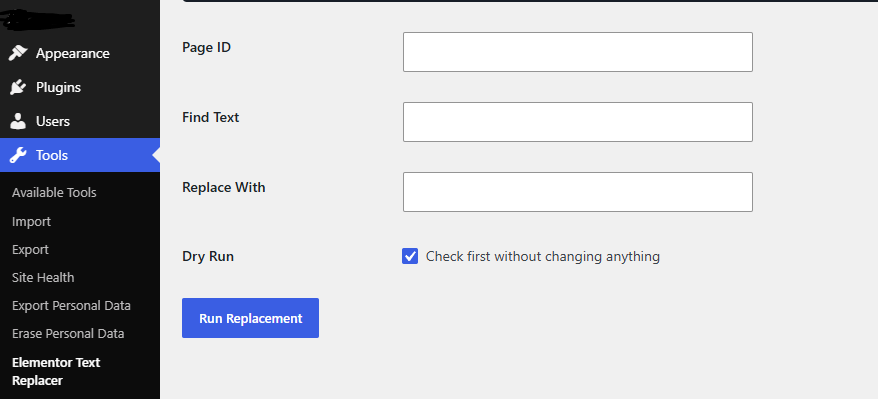
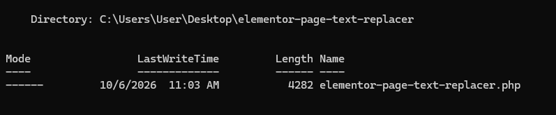
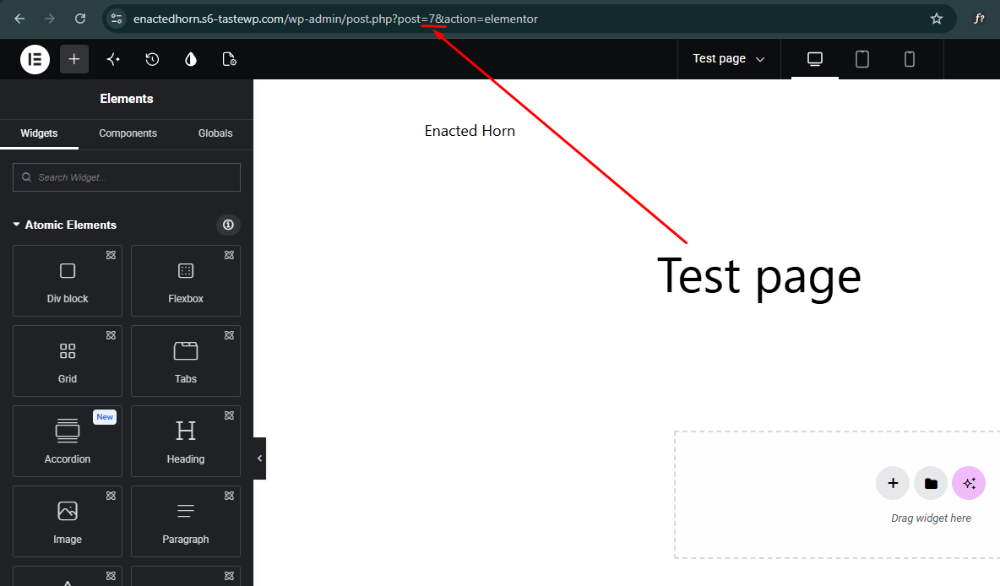
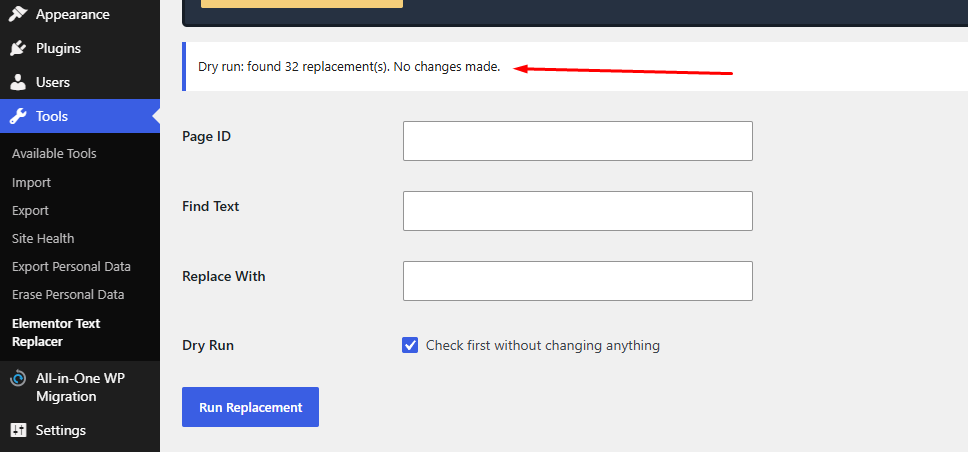
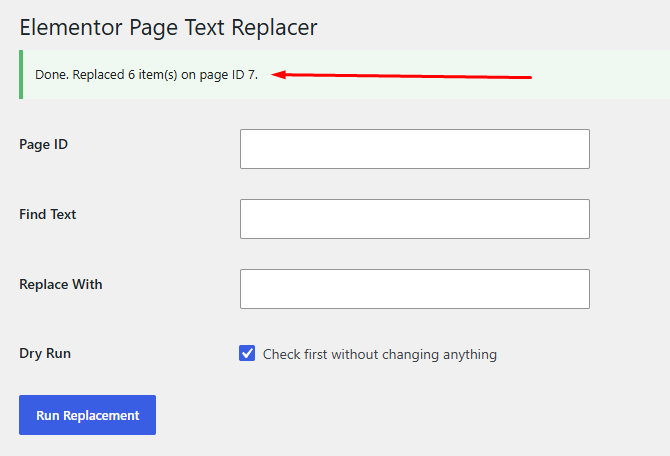

Cloned a page for a new location? Swap Dhaka for Sylhet by page ID, without touching your header, footer, menus or any other page.

Site-wide search and replace tools are risky. This plugin edits only the Elementor data of the page ID you choose.
Built for people who create many location pages from a single Elementor design.
Only the selected page's _elementor_data is changed. Other pages and templates stay untouched.
See exactly how many replacements will be made before anything is written to the database.
Headings, text editors, buttons, tabs, accordions and image alt text stored in Elementor.
Clone, set the new slug, enter the page ID and run. Repeat for 30 locations in minutes.
Lives under Tools → Elementor Text Replacer in the WordPress dashboard.
A single PHP file. No bloat, no settings pages, no front-end code.
Upload the plugin folder using your file manager or SFTP.
Open /wp-content/plugins/ and create this structure:
/wp-content/plugins/
└── elementor-page-text-replacer/
└── elementor-page-text-replacer.phpPaste the plugin code into the PHP file.

Go to Plugins → Installed Plugins and activate Elementor Page Text Replacer. Then open Tools → Elementor Text Replacer.
Always preview first. Then run the real replacement once the count looks right.
wp-admin/post.php?post=7&action=elementorHere the page ID is 7.

Enter the page ID, the text to find and the replacement. Keep Dry Run checked and click Run Replacement. Nothing is changed. You just see the count.
| Field | Example |
|---|---|
| Page ID | 123 |
| Find Text | Dhaka |
| Replace With | Sylhet |
| Dry Run | Checked |

If the count looks right, uncheck Dry Run and click Run Replacement again. You will see:
Done. Replaced 6 item(s) on page ID 7.

Go to Elementor → Tools → Regenerate CSS & Data, clear your cache plugin and hosting cache, then check the page in an incognito window.
Clone once, then repeat these steps for every city.
| Page | ID | Find | Replace |
|---|---|---|---|
| SEO Service in Sylhet | 123 | Dhaka | Sylhet |
| SEO Service in Chittagong | 124 | Dhaka | Chittagong |
| SEO Service in Khulna | 125 | Dhaka | Khulna |
Replacement is permanent once Dry Run is unchecked. Work through this checklist.
Test on a staging site first when possible. Matching text is replaced everywhere in that page's Elementor data, including links and alt text.
Real screenshots from a WordPress install.
Quick fixes for the most common issues.
_elementor_data for the single post ID you enter.Grab the plugin from GitHub and update your location pages one by one, safely.